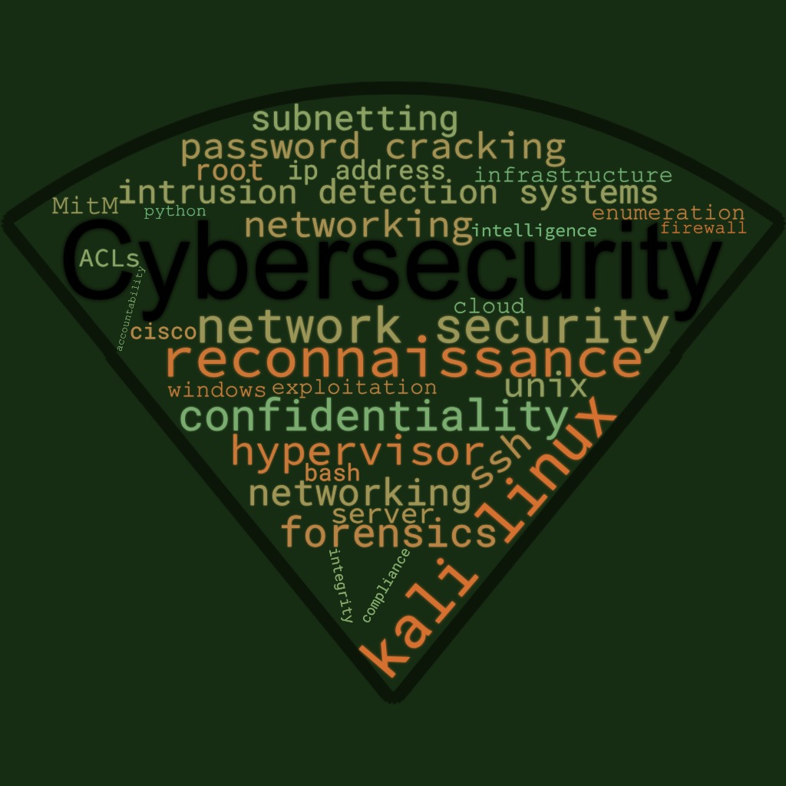
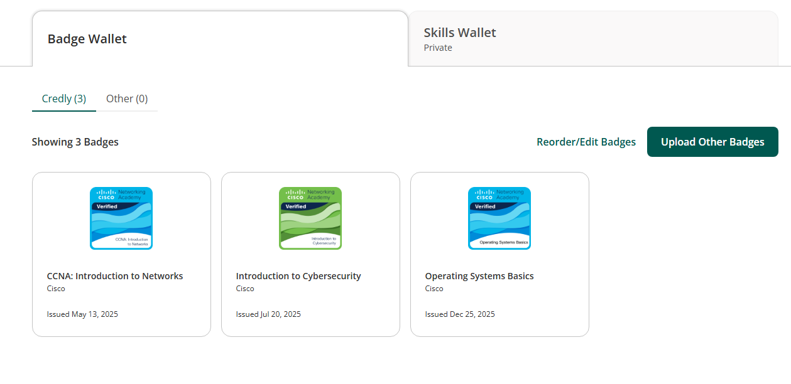
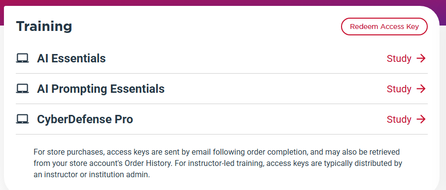
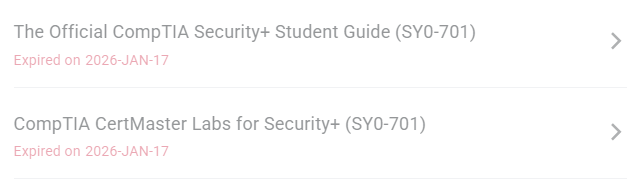

Professional profile photo for my cybersecurity portfolio.
Professional Introduction
My name is Raymond Newton, and I am a cybersecurity student developing the technical, analytical, and professional skills needed to protect systems, networks, and data from modern cyber threats. My interest in cybersecurity comes from the challenge of solving problems, investigating how systems work, and learning how to defend technology against misuse.
Throughout my coursework and hands-on labs, I have gained experience with cybersecurity concepts such as network security, vulnerability analysis, system hardening, Linux administration, digital forensics, access control, and incident response. I have worked with tools and platforms including Kali Linux, Wireshark, Nmap, CyberChef, Active Directory, Windows Server, Linux command-line tools, GitHub, and virtual lab environments.
Academic Status
I am pursuing an Associate of Applied Science in Cybersecurity with an expected graduation date of May 8, 2026.
College: Houston Community College
Class Rank: Graduate / Spring 2026 candidate
Career Goal
My career goal is to become a cybersecurity professional who helps organizations protect systems, networks, and sensitive information. I am especially interested in security operations, incident response, vulnerability analysis, network defense, digital forensics, and system administration.
Cybersecurity Involvement
I have participated in CyberOps course projects, NDG Guided Labs, XP Cyber Challenges, NCL Cyber Skyline individual and team challenges, Cisco Networking Academy training, and security-focused coursework.
Role Model
A role model I look up to is Bruce Schneier, a respected cybersecurity professional, cryptographer, and security author.
“Security is a process, not a product.”
This quote reminds me that cybersecurity requires continuous monitoring, improvement, documentation, testing, and awareness.
Employment History
In addition to my academic work, I have maintained employment while pursuing my education. Working while attending school has strengthened my discipline, time management, and ability to stay focused on long-term goals. These experiences have prepared me to handle the responsibility and persistence required in cybersecurity roles.
To update: Add current job title, employer, internship experience, or prior employment here.
Cybersecurity Word Cloud
This word cloud represents technical concepts, tools, values, and areas of cybersecurity that have shaped my learning throughout this program.

Education & Coursework
I am pursuing an Associate of Applied Science (AAS) in Cybersecurity with an expected graduation date of May 8, 2026. My academic program has helped me build a foundation in cybersecurity, networking, operating systems, cloud computing, system administration, and technical problem-solving.
Cisco / NetAcad
- CCNA: Introduction to Networks
- Introduction to Cybersecurity
- Operating Systems Basics
- Computer Hardware Basics
- Security and Connectivity Support
- Industrial IoT and Control Systems
NDG Linux
- Linux Unhatched
- Linux Essentials
- Linux 1
- Linux 2
Cloud & Security Training
- AWS Cloud Student Education
- Microsoft Azure Student Education
- CompTIA Security+ preparation
- AI Essentials
- AI Prompting Essentials
- CyberDefense Pro
My completed and in-progress coursework has prepared me for cybersecurity roles by teaching me technical analysis, essential cybersecurity frameworks, and foundational problem-solving skills needed to respond to issues in real time. Through networking, Linux, cloud, operating systems, and security coursework, I have built a foundation that supports security operations, incident response, vulnerability analysis, network defense, system administration, and digital forensics.
Cisco, NetAcad, and NDG course progress.

Cisco badge wallet showing earned badges.

Additional cybersecurity and AI training.

Security+ training and lab preparation evidence.
Cybersecurity Skills
Technical Skills
- Linux command line
- Windows Server administration
- Active Directory users, groups, and permissions
- Nmap network scanning
- Wireshark packet analysis
- CyberChef decoding and analysis
- Digital forensics basics
- Web investigation with browser Developer Tools
- Password and hash analysis
- System hardening and verification
- Cloud security foundations
Security Domains
- Security operations
- Network security
- Endpoint and system security
- Digital forensics and investigation
- Web application security
- Cloud and emerging technology security
- Incident response thinking
- Access control
Professional Skills
- Technical documentation
- Analytical thinking
- Problem solving
- Attention to detail
- Communication
- Teamwork
- Time management
- Persistence
- Professionalism
The skills listed here were developed through CyberOps projects, NDG Linux labs, Cisco Networking Academy modules, XP Cyber Challenges, individual and team NCL Cyber Skyline challenges, Security+ preparation, and the help desk ticket group project.
Projects & Hands-On Experience
CyberOps Projects
Tools/Platforms: CyberOps lab environment, logs, packet analysis tools, command-line tools, documentation resources.
Description: CyberOps projects introduced me to the responsibilities of a cybersecurity analyst in a security operations environment. These projects focused on reviewing technical evidence, identifying security events, analyzing systems or network activity, and documenting findings.
What I learned: I learned how cybersecurity professionals investigate suspicious activity, use evidence to support conclusions, and verify results instead of guessing.
NDG Guided Labs
Tools/Platforms: NDG lab environment, Linux terminal, command-line tools, Cisco NetAcad resources.
Description: NDG Guided Labs provided hands-on practice with Linux, networking, system navigation, permissions, and command-line tasks.
What I learned: I became more comfortable with Linux commands, file systems, permissions, and troubleshooting in lab environments.
XP Cyber Challenges
Tools/Platforms: Windows Server, Active Directory Users and Computers, Server Manager, Joomla administrator panel, Firefox, Linux services, documentation guide.
Description: XP Cyber Challenges allowed me to practice identifying and correcting security issues in simulated enterprise environments, including access control issues, vulnerable software, Active Directory settings, and system hardening tasks.
What I learned: I learned that security fixes must be applied carefully, verified properly, and documented clearly enough that another person could repeat the process.
NCL Cyber Skyline Individual Challenges
Tools/Platforms: Nmap, Wireshark, CyberChef, Linux terminal, browser Developer Tools, file analysis tools, password analysis tools.
Description: Individual NCL challenges gave me the opportunity to practice cybersecurity skills independently in a competitive environment across network scanning, traffic analysis, web investigation, forensics, cryptography, password analysis, and log review.
What I learned: I improved my ability to work through unfamiliar technical problems, choose the correct tool, test possible solutions, and verify answers.
NCL Cyber Skyline Team Challenges
Tools/Platforms: NCL Cyber Skyline platform, team communication, cybersecurity analysis tools, documentation notes.
Description: Team NCL challenges allowed me to apply cybersecurity skills collaboratively by communicating findings, dividing tasks, comparing evidence, and verifying answers before submission.
What I learned: I learned that cybersecurity work often depends on teamwork, communication, task management, and shared verification.
Help Desk Ticket Group Project
Tools/Platforms: Help desk ticket examples, documentation tools, group collaboration, technical analysis.
Description: The help desk ticket group project focused on reviewing technical support issues and documenting how they should be prioritized, assigned, escalated, and resolved.
What I learned: I learned how technical support, troubleshooting, documentation, and professional communication connect to cybersecurity work.
Reflections & Lessons Learned
Throughout this course, I gained a stronger foundation in cybersecurity by working through hands-on labs, guided modules, projects, and cybersecurity challenges. I developed technical skills in networking, Linux, Windows Server, Active Directory, system hardening, digital forensics, web security investigation, packet analysis, and documentation.
One of the main challenges I encountered was learning how to troubleshoot when the first solution did not work. I addressed this by slowing down, reviewing instructions carefully, checking basics such as permissions, syntax, paths, services, accounts, and network settings, and breaking problems into smaller steps.
My understanding of cybersecurity has developed from seeing it mainly as a technical field to understanding it as a process of protection, investigation, communication, and continuous improvement. Cybersecurity is not only about using tools; it is about understanding systems, identifying risk, protecting users, documenting evidence, and making informed decisions.
I am continuing to improve my technical depth with Linux, networking, cloud security, scripting, Wireshark, Splunk, and security operations workflows. I also want my documentation to become clearer, more professional, and more useful to others.
Certifications & Training
Certifications Earned / In Progress
- CompTIA Security+ — in progress
- Cisco CCNA: Introduction to Networks — badge earned
- Cisco Introduction to Cybersecurity — badge earned
- Cisco Operating Systems Basics — badge earned
- NDG Linux training — completed and in progress
Continuing Training Interests
- TryHackMe — recently started
- Wireshark packet analysis training
- Splunk log analysis and SOC training
- AWS cloud security
- Microsoft Azure cloud security
- Security+ certification preparation
My certifications and training reflect my commitment to continuous learning. Through Security+ preparation, Cisco Networking Academy, NDG Linux training, AWS and Azure education, CyberOps projects, XP Cyber Challenges, NCL Cyber Skyline participation, and TryHackMe practice, I am building the technical and professional foundation needed for cybersecurity roles.
Personal & Independent Projects
MirrorMe: AI-Assisted Speech and Reading Support Concept
Project Type: Independent technology concept focused on artificial intelligence, accessibility, education technology, privacy, and responsible design.
MirrorMe is an independent project concept focused on using artificial intelligence to help children with delayed speech practice speaking, reading, and communication skills. The goal is to explore how AI can be used as a supportive learning tool for children who may need additional help developing language and literacy skills.
This project connects to cybersecurity because any application involving children, voice data, user accounts, or learning records would need strong privacy and security protections. If developed further, MirrorMe would need secure authentication, limited data collection, encrypted storage, parental consent, access control, and responsible AI use.
Supporting Documents
This section can include a résumé, recommendation letters, certificates, academic papers, or project documentation.